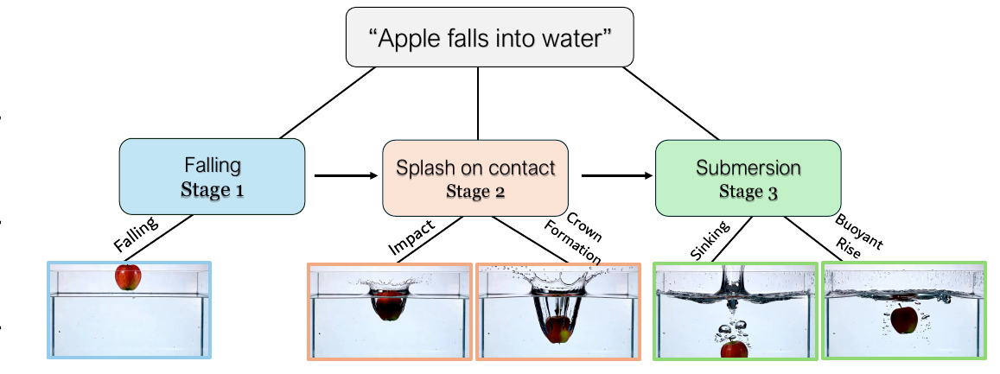

1Virginia Tech · 2Qualcomm AI Research
NeurIPS 2026“A sponge is squeezed over a bowl of water while bubbles rise in a fish tank beside it.”
Elastic deformation · fluid dynamics
“A hammer strikes a nail into wood while a pot of water boils on the stove beside it.”
Impact mechanics · fluid thermodynamics
“A balloon floats upward while steam rises from a pot on the stove below it.”
Buoyancy · convective phase transition
Video generation models have achieved remarkable visual fidelity and have strong potential to become general-purpose world simulators. Despite this progress, they still fail to generate videos which adhere to laws of physics. The problem becomes even more apparent in realistic settings where multiple physical principles must work together within the same video. For example, “a balloon floating upward while steam rises from a pot” requires buoyancy and fluid dynamics to unfold coherently and simultaneously. Yet existing methods largely ignore multi-principle interactions, focusing on a single principle per video.
We propose HiPhy (Hierarchical Physical Alignment), a reinforcement learning framework that grounds video generation in physical laws through a dual-level objective: locally enforcing the temporal dynamics of individual physical principles, and globally ensuring the physical and semantic coherence of the entire scene. To support multi-principle generation, we construct a 50K-prompt dataset and introduce a prompt benchmark MultiPhyBench, spanning a diverse range of co-occurring physical events. Our experiments show that HiPhy significantly outperforms prior methods and baselines, improving physical commonsense and semantic alignment across various benchmarks, with the largest gains on scenes involving multiple physical principles, where competing methods degrade most sharply.
Models aren’t short on visual capability. Given a detailed enough prompt, they render individual principles with striking fidelity, but the failure shows up specifically when several principles must unfold together, along two distinct axes.
HiPhy’s dual-level design addresses both directly: per-principle supervision targets Principle Omission, while fine-grained sub-stage reward design addresses Temporal Shortcutting. At the foundational level, HiPhy explicitly optimizes the chronological progression of each physical event by breaking it into smaller stages; at the same time, it aligns these stages with global video coherence and semantic alignment objectives, so multi-principle interactions compose naturally.

HiPhy explicitly decomposes complex physical events (e.g., “an apple falling into water”) into temporally ordered sub-stages. This lets the reward recursively score the chronological progression, completeness, and alignment of the underlying physics.
HiPhy (right of each pair) versus the Wan base model (left), across rigid-body, fluid, and deformation events.
A colorful rubber ball is dropped from a height, bouncing as it contacts the floor.
A knife skillfully slices an apple.
A leaf falls from a tree while rain hits a puddle below.
A glove catching a fast-moving baseball.
A gymnast performs an aerial somersault at sunrise.
A skateboard performs jumps while splashing through a large puddle on a street.
A stick of incense burns while honey drips slowly from a spoon beside it.
Camera focuses on a toothpaste tube while a hand squeezes a steady stream of toothpaste.
A metal can is crushed underfoot while a crumpled piece of paper slowly unfolds and partially recovers its shape.
A glass bottle rolls off a pier, falls into the water, bobs back up, and floats.
A woman doing a pirouette in an empty dance studio.
A slow-motion close-up of a chef slicing a tomato.
A figure skater executes a powerful spin.
A ballet dancer twirls on the surface of a still lake at sunset.
HiPhy against Wan, PnP, PhyT2V, and WISA on prompts that require several concurrent physical processes to resolve correctly.
A book slides over the desk while a small rubber ball falls on desk.
Rigid body dynamics + elastic bouncing
Coffee accepting a gentle pour of milk.
Fluid mixing
Sauce simmers in a pan on the stove while a hand is ironing a shirt on a table, and through the kitchen window rain is pouring against the window.
Thermal + mechanical dynamics + fluid impact
A hand beats eggs in a bowl with a whisk, while a pot of water is boiling next to it, a single candle is also burning on the table.
Mechanical emulsification + convective boiling + combustion
HiPhy’s hierarchical alignment objective is a training signal, not an architecture, so it transfers across different video diffusion backbones.
“A coin dances in a spiral on the table.”